La nueva experiencia competitiva y social de Pipo Pádel
🔥 Mucho más que competir
Un torneo pensado para compartir, disfrutar del pádel,
conocer jugadores, vivir partidos increíbles y hacer crecer
la comunidad deportiva de La Quiaca.
Los Cuartos de Final del Torneo Apertura 2026 ya comenzaron y el primer clasificado a las semifinales quedó definido.
🔥 Batacazo de Hay Equipo
La gran sorpresa de los Playoffs llegó en el encuentro entre
Hay Equipo y Los Pipos.
Contra muchos pronósticos, Hay Equipo se quedó con el partido por
6-2 / 6-3, eliminando al segundo mejor clasificado de la fase regular.
Los Pipos comenzaron varios games de manera pareja, pero no lograron sostener el ritmo durante los momentos decisivos.
Hay Equipo aprovechó cada oportunidad y construyó una victoria histórica para avanzar a las semifinales de la Copa de Oro.
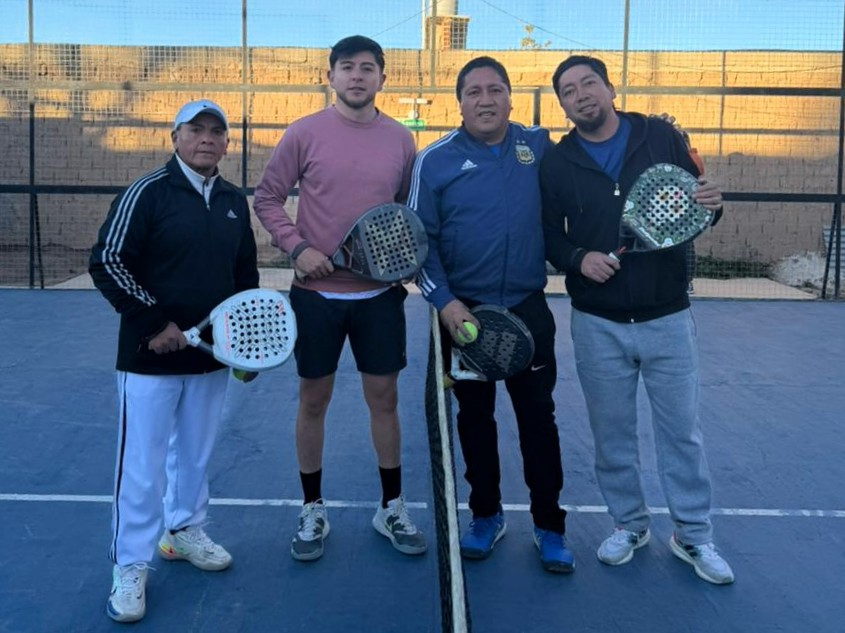
⚔️ Partidazo entre Rompe Redes y Los Colocadores
El segundo encuentro de la jornada nocturna estuvo a la altura de los Playoffs.
Los Rompe Redes vencieron a Los Colocadores
por 7-6 (7-5) / 7-5 en uno de los partidos más parejos y atractivos del torneo.
Hubo puntos largos, intercambios intensos y momentos de máxima tensión.
El primer set se definió en Tie Break y el segundo mantuvo la incertidumbre hasta los últimos games.
Finalmente, Rompe Redes logró cerrar el encuentro y asegurar su lugar en semifinales.
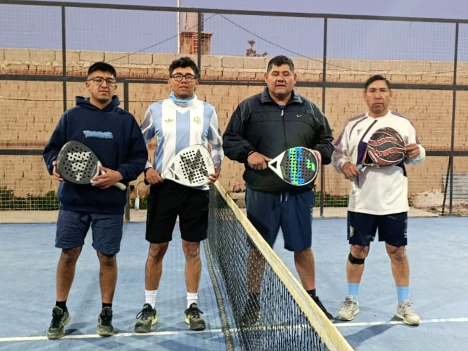
🏅 Así quedan las Semifinales Confirmadas
Copa de Oro
🏆 Hay Equipo 🆚 Los Rompe Redes
Copa de Plata
🥈 Los Pipos 🆚 Los Colocadores
Ambos cruces ya están confirmados y esperan por los resultados del último Cuarto de Final.
🌙 Esta noche se completa el cuadro
El último boleto a semifinales se definirá hoy, en la previa del Día del Padre.
🕘 21:15 hs
🎾 Los Doble E 🆚 Pala Sedienta
El ganador avanzará a la Copa de Oro para enfrentar a Viento Cruzado.
El perdedor disputará la Copa de Plata frente a Los Infernales.
Se espera otro gran partido de Playoffs en una noche que puede definir gran parte del camino hacia las finales.
19-6-26 🏆 Comenzaron los Playoffs de la Liga Apertura 2026
La etapa más esperada del torneo ya está en marcha. Se disputó el primer encuentro correspondiente a los Cuartos de Final y ya conocemos al primer semifinalista de la Copa de Oro.
🎾 Cuartos de Final
🥇 Viento Cruzado 🆚 Los Infernales
Resultado: 6-1 / 6-2
A pesar del marcador, Los Infernales mostraron probablemente su mejor versión desde que comenzó el torneo. La dupla generó varias situaciones de Punto de Oro y tuvo oportunidades para acortar diferencias, aunque no logró concretarlas.
Por su parte, Viento Cruzado volvió a demostrar por qué finalizó la fase regular en el primer puesto. Con un juego sólido y mucha regularidad, consiguió avanzar a las semifinales de la Copa de Oro manteniendo su condición de favorito.
👏 Felicitaciones a Los Infernales por el crecimiento demostrado durante todo el campeonato y por competir hasta el final.
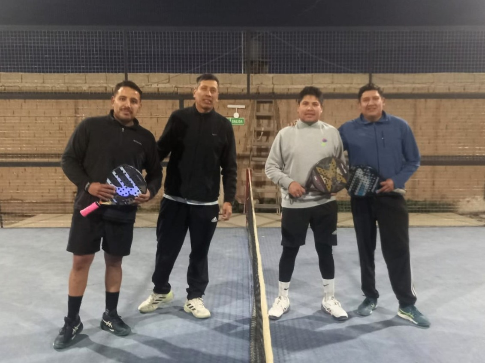
🔥 Hoy continúan los Cuartos de Final
La jornada de hoy promete emociones fuertes con dos encuentros que definirán nuevos semifinalistas.
🎾 Los Pipos 🆚 Hay Equipo | 16:00 hs
🎾 Los Rompe Redes 🆚 Los Colocadores | 19:00 hs
Los ganadores de estos encuentros avanzarán a las semifinales de la Copa de Oro, mientras que los equipos derrotados continuarán su camino en la Copa de Plata.
De esta manera, quedará pendiente solamente un cruce de Cuartos de Final para completar el cuadro y conocer definitivamente cómo quedarán conformadas ambas competencias.
🏅 Camino a las Semifinales
Hasta el momento, el único equipo clasificado a semifinales de la Copa de Oro es:
✅ Viento Cruzado
Cada partido empieza a sentirse como una final. Ya no hay margen de error y cada punto puede definir el destino de una temporada completa.
🧉 Invitamos a toda la comunidad a acercarse al predio, acompañar a los equipos y disfrutar de una nueva jornada de Playoffs en Pipo Pádel.
🏁 15-6-26 Finalizó la Fase Regular de la Liga Apertura 2026
Después de varias semanas de competencia, grandes partidos y mucho crecimiento deportivo de todos los equipos, la fase regular del Torneo Apertura 2026 llegó a su fin.
Las últimas jornadas nos dejaron encuentros muy entretenidos y una definición emocionante de las posiciones finales que determinarán los cruces de Playoffs.
🎾 Últimos resultados de la Fase Regular
Los Colocadores 🆚 Los Infernales
Resultado: 6-2 / 6-2
Los Colocadores cerraron una buena fase regular imponiendo su juego y sumando una importante victoria.
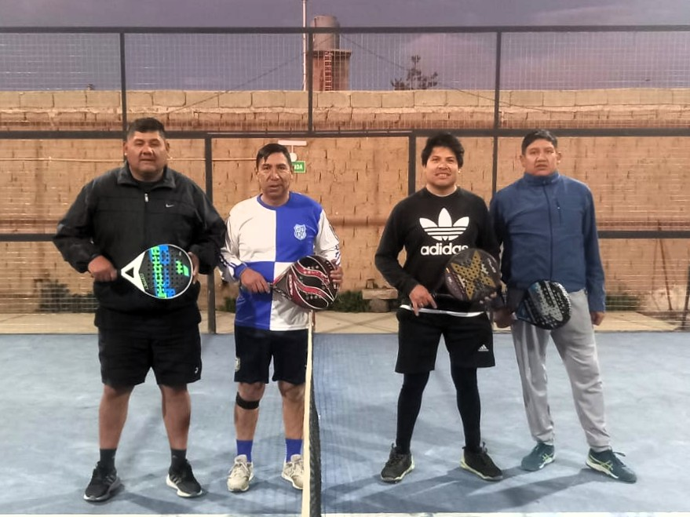
Los Rompe Redes 🆚 Pala Sedienta
Resultado: 6-2 / 6-3
Los Rompe Redes continúan demostrando un gran nivel y lograron quedarse con un partido importante frente a una de las revelaciones del torneo.
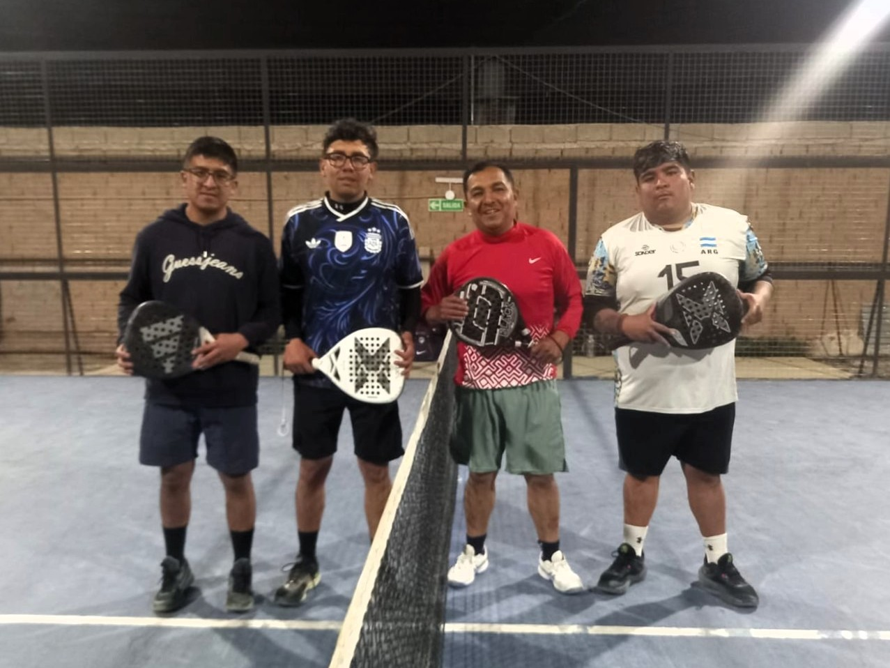
Los Infernales 🆚 Los Pipos
Resultado: 0-6 / 1-6
Los Pipos cerraron la fase regular con una sólida actuación, consolidando el segundo puesto de la tabla general.
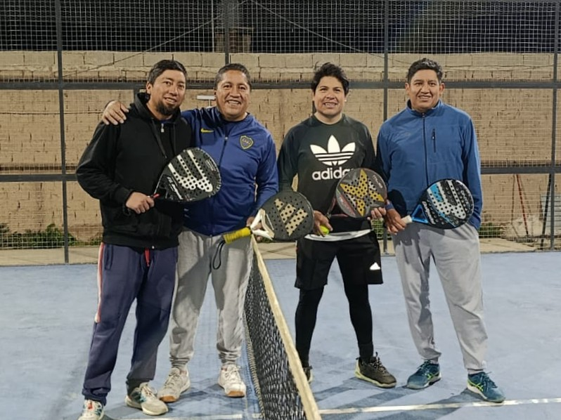
Los Doble E 🆚 Pala Sedienta
Resultado: 6-2 / 5-7 / 3-6
Uno de los mejores partidos de las últimas fechas. Después de comenzar abajo, Pala Sedienta logró revertir el encuentro y quedarse con una gran victoria en tres sets.
🔥 El destino quiso que ambos equipos vuelvan a cruzarse en Playoffs, donde ahora estará en juego mucho más que una victoria.
El último partido de la fase regular regaló otro verdadero partidazo. Los Pavitas lograron remontar el encuentro y quedarse con la victoria en un emocionante tie break final.
Lamentablemente, durante este encuentro el capitán de Los Pavitas sufrió una lesión que obligó al equipo a retirarse de la competencia.
Desde la organización le deseamos una pronta recuperación y agradecemos el compromiso demostrado durante todo el torneo.
Debido a esta situación, Los Infernales ingresan oficialmente a los Playoffs ocupando el octavo lugar de clasificación.
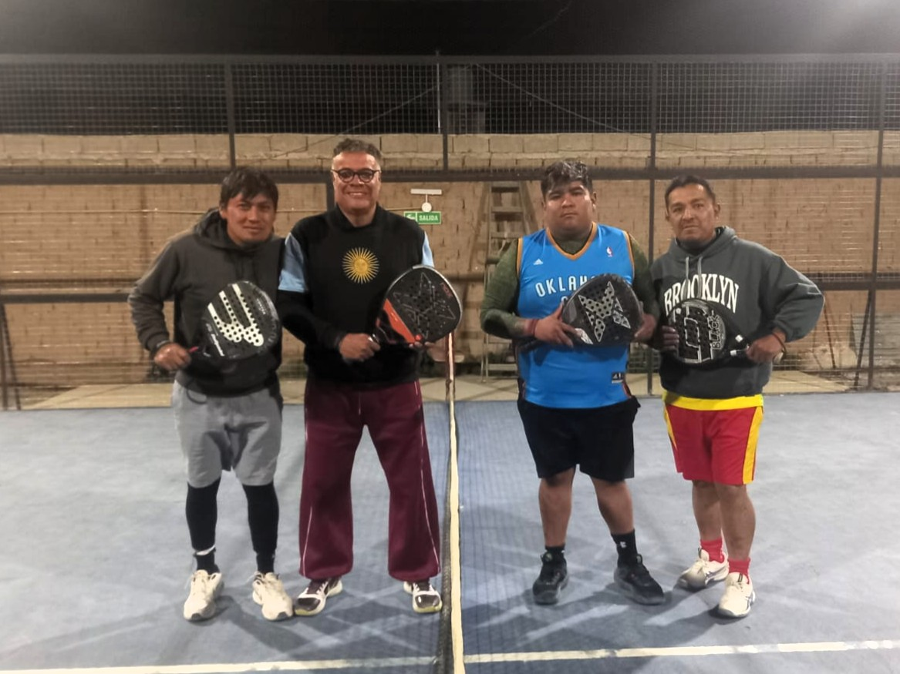
📸 Galería de las últimas jornadas
Próximamente compartiremos más imágenes de los encuentros disputados durante el cierre de la fase regular.
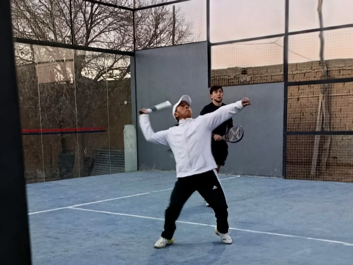
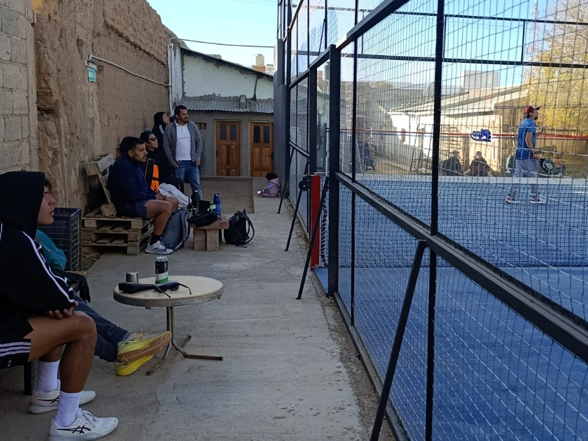
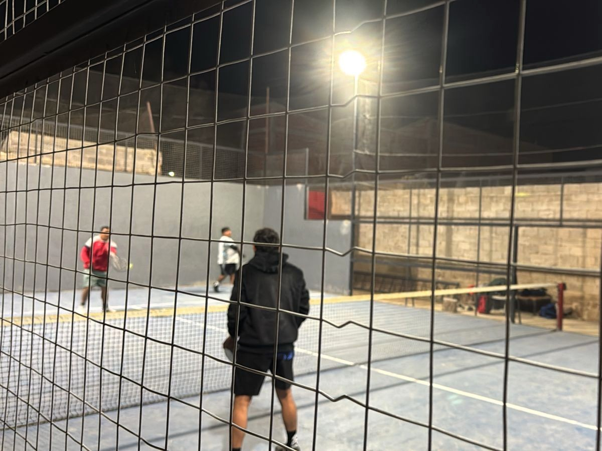
🏆 Clasificación Final a Playoffs
🥇 Viento Cruzado
🥈 Los Pipos
🥉 Los Rompe Redes
🏅 Los Doble E
Pala Sedienta
Los Colocadores
Hay Equipo
Los Infernales
🔥 Cuartos de Final
Los cruces deberán completarse hasta el día 20 de junio.
🥇 Viento Cruzado 🆚 Los Infernales
🥈 Los Pipos 🆚 Hay Equipo
🥉 Los Rompe Redes 🆚 Los Colocadores
🏅 Los Doble E 🆚 Pala Sedienta
🏆 Copa de Oro
Los ganadores de Cuartos de Final avanzarán a la Copa de Oro.
Semifinal 1
Ganador de Viento Cruzado 🆚 Los Infernales
Ganador de Los Doble E 🆚 Pala Sedienta
Semifinal 2
Ganador de Los Pipos 🆚 Hay Equipo
Ganador de Los Rompe Redes 🆚 Los Colocadores
Los vencedores disputarán la gran Final Oro.
🥈 Copa de Plata
Los equipos que no logren avanzar en Cuartos de Final continuarán compitiendo en la Copa de Plata.
Semifinal 1
Perdedor de Viento Cruzado 🆚 Los Infernales
Perdedor de Los Doble E 🆚 Pala Sedienta
Semifinal 2
Perdedor de Los Pipos 🆚 Hay Equipo
Perdedor de Los Rompe Redes 🆚 Los Colocadores
Los ganadores disputarán la Final Plata.
📅 Las semifinales deberán completarse hasta el día 25 de junio.
De esta manera, todos los equipos clasificados continuarán compitiendo por un objetivo deportivo hasta el final del torneo.
📢 En los próximos días se publicarán oficialmente las fechas y horarios de los primeros encuentros correspondientes a los Cuartos de Final.
📰 9-6-26 La Liga entra en su recta final
La Liga Apertura 2026 sigue avanzando a gran ritmo y ya se disputaron gran parte de los encuentros correspondientes a las Fechas 6 y 7.
Cada jornada deja nuevos protagonistas, partidos más parejos y una tabla de posiciones que continúa ajustándose de cara a los Playoffs.
🎾 Resumen de la Fecha 6
Hay Equipo 🆚 Viento Cruzado → 0-6 / 3-6
Los Colocadores 🆚 Pala Sedienta → 4-6 / 6-4 / 6-4
Los Pipos 🆚 Los Rompe Redes → 2-6 / 5-7
Los Infernales 🆚 Los Pavitas → 3-6 / 6-7 (5-7)
Hay Equipo 🆚 Los Colocadores → 6-4 / 3-6 / 5-7
Los Pavitas 🆚 Los Rompe Redes → 3-6 / 4-6
La sexta fecha tuvo varios encuentros definidos en tercer set y tie break, demostrando la gran paridad que existe entre muchas de las parejas participantes.
🎾 Avance de la Fecha 7
Pala Sedienta 🆚 Viento Cruzado → 2-6 / 3-6
Hay Equipo 🆚 Los Rompe Redes → 3-6 / 7-6 (7-2) / 3-6
Los Infernales 🆚 Los Doble E → 2-6 / 2-6
Hay Equipo 🆚 Los Doble E → 3-6 / 4-6
Viento Cruzado continúa invicto y liderando la tabla, mientras que la pelea por los puestos de clasificación sigue completamente abierta.
📸 Galería de los últimos encuentros
Compartimos algunas de las postales que dejaron las últimas jornadas de competencia.
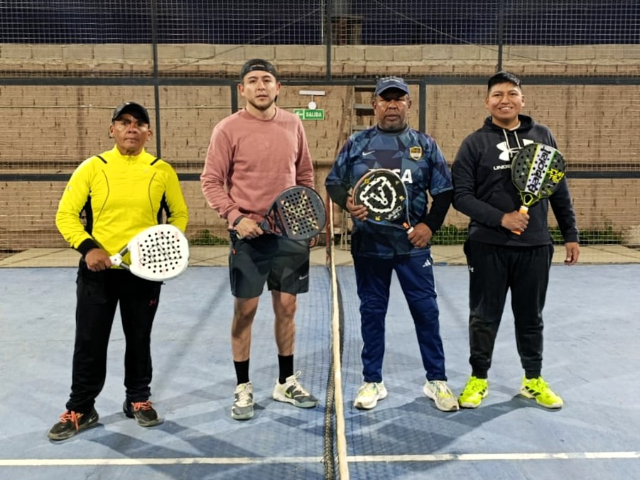
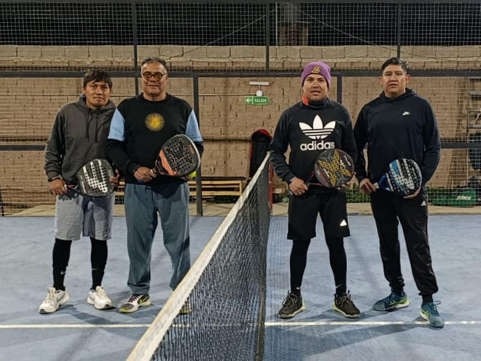
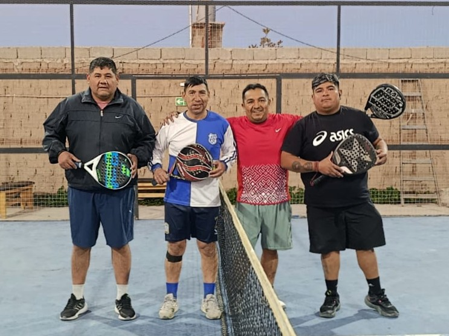
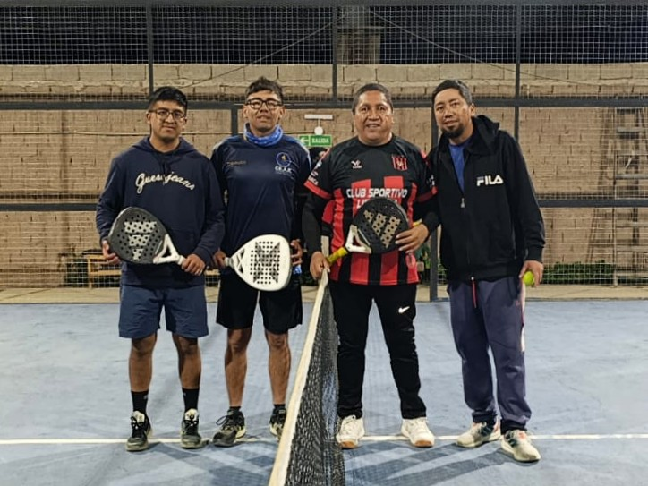
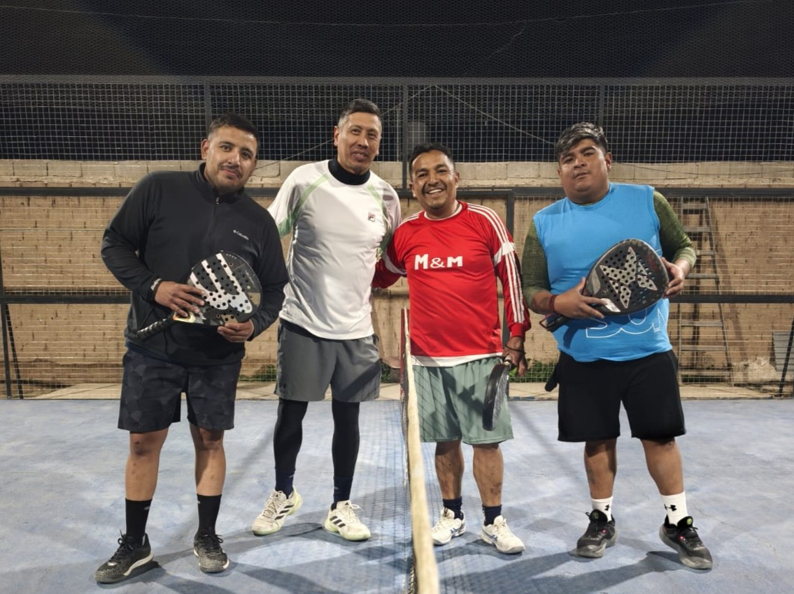
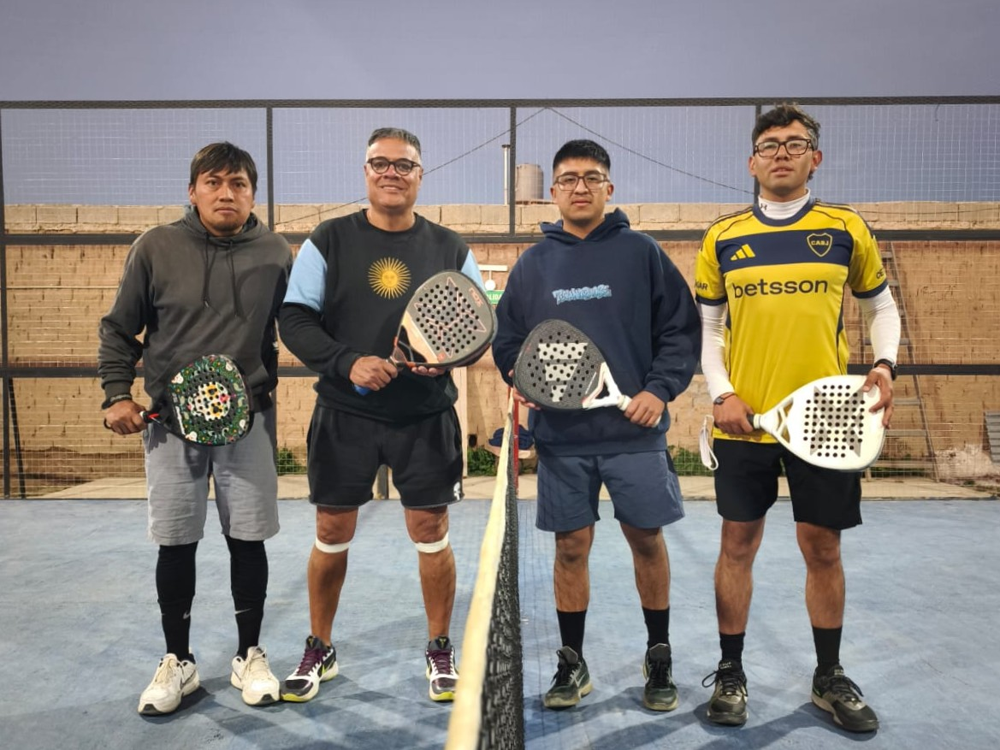
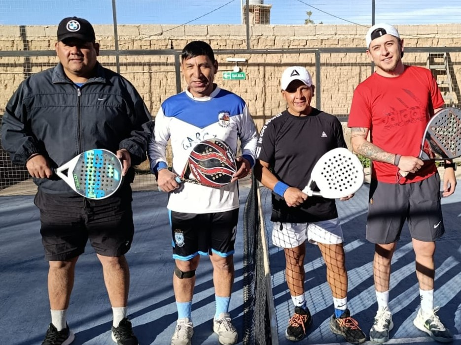
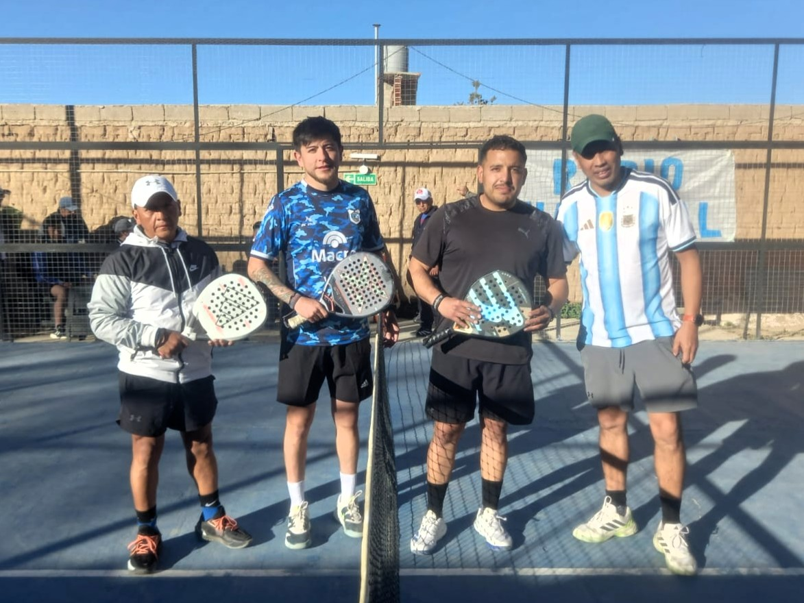
📊 Así está la pelea arriba
Viento Cruzado lidera con 18 puntos y continúa siendo el único invicto del certamen.
Los Pipos se mantienen como principales perseguidores con varios partidos importantes por delante, mientras que Los Pavitas, Los Doble E y Los Rompe Redes protagonizan una de las luchas más interesantes por los puestos de clasificación.
Por detrás, Punto de Oro, Los Colocadores y Pala Sedienta todavía tienen encuentros pendientes que podrían modificar considerablemente la tabla.
⏳ La organización tiene previsto completar la fase regular durante las próximas dos semanas para dar paso a las instancias decisivas de Playoffs y Copa de Plata.
🎙️ Desafío Día del Periodista
También queremos destacar la gran jornada recreativa realizada entre Radio Nacional y Canal 6 La Quiaca.
📻 Radio Nacional derrotó a 📺 Canal 6 por 4 partidos contra 3 en una tarde llena de risas, compañerismo y mucho pádel.
La iniciativa tuvo una gran participación de jugadores e hinchas de ambas instituciones, aunque Radio Nacional fue quien aportó la delegación más numerosa.
Los participantes ya dejaron entrever que próximamente podrían organizar nuevos desafíos frente a otras instituciones de la ciudad.
❤️ Gracias por seguir construyendo Pipo Pádel
Quiero agradecer porque cada vez que miro alrededor veo que Pipo Pádel ya dejó de ser un proyecto mío solamente.
Cada uno aporta algo, una mano, una idea, tiempo o buena onda. Y eso es lo que hace crecer este lugar.
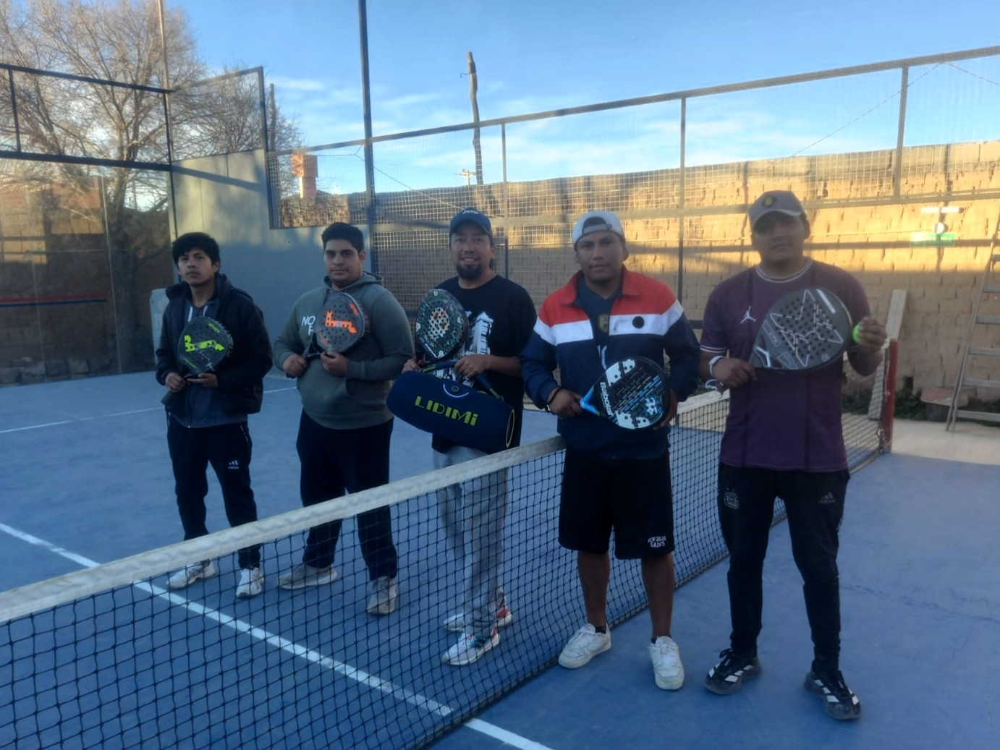
📰 3-6-26 Liga Apertura 2026 | Fecha 5 completada y arranca la Fecha 6
La Liga Apertura 2026 sigue sumando grandes encuentros y ya quedó oficialmente completada la Fecha 5.
Durante la jornada del lunes se disputaron cuatro partidos con muy buenos puntos, gran acompañamiento de familiares y amigos, y una tabla de posiciones que continúa moviéndose fecha tras fecha.
🎾 Doble Falta vs Viento Cruzado
Resultado: 1-6 / 3-6
Un partido muy entretenido y con varios puntos largos. Doble Falta volvió a mostrar crecimiento dentro de la cancha y por momentos complicó a uno de los equipos más sólidos del torneo. Sin embargo, Viento Cruzado sigue demostrando un gran nivel y sumó una nueva victoria para mantener el invicto y la punta de la tabla.
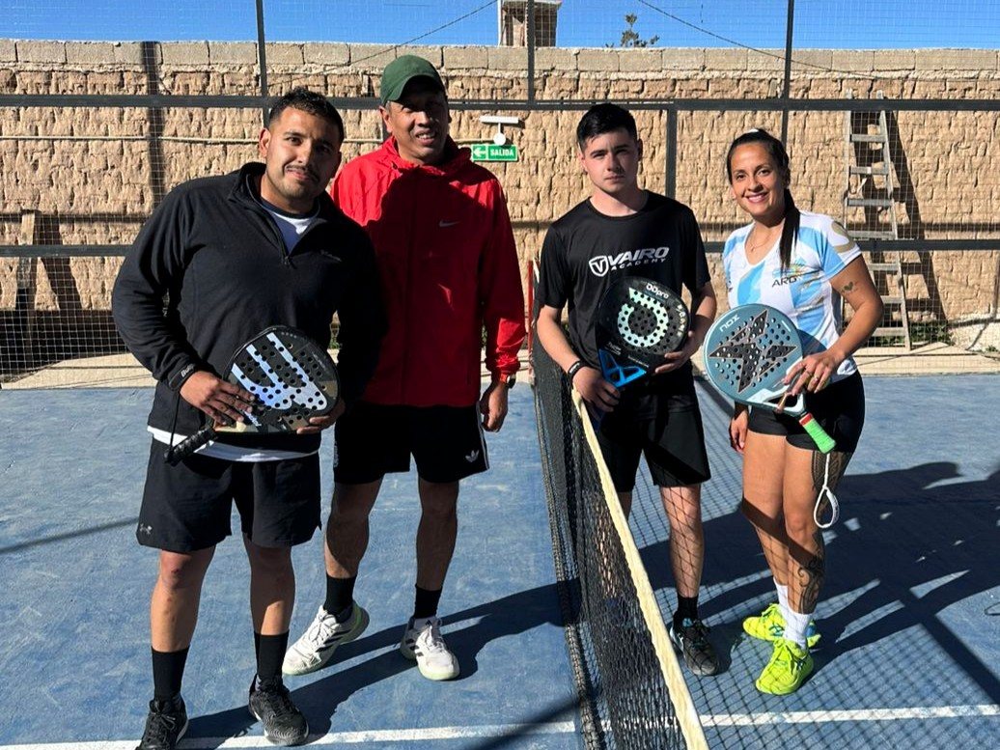
🎾 Los Doble E vs Apunados
Resultado: 6-0 / 6-0
Los Doble E lograron una victoria cómoda y continúan sumando puntos importantes. Apunados mostró algo más de precisión respecto a presentaciones anteriores, pero volvió a ingresar frío al partido y no consiguió desarrollar su mejor versión.
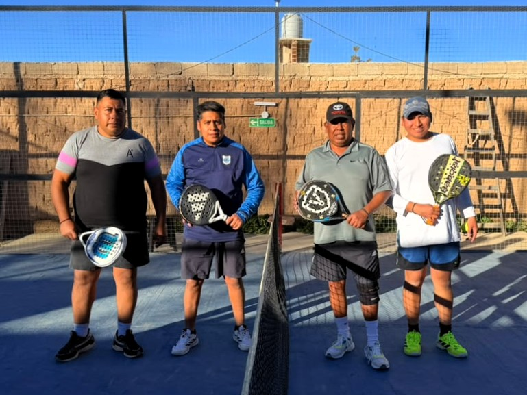
🎾 Doble Falta vs Hay Equipo
Resultado: 4-6 / 4-6
Otro gran partido de Doble Falta. El equipo estuvo muy cerca de forzar un tercer set y dejó la sensación de que la primera victoria está cada vez más cerca. Hay Equipo supo aprovechar los momentos clave y terminó llevándose un encuentro muy disputado.
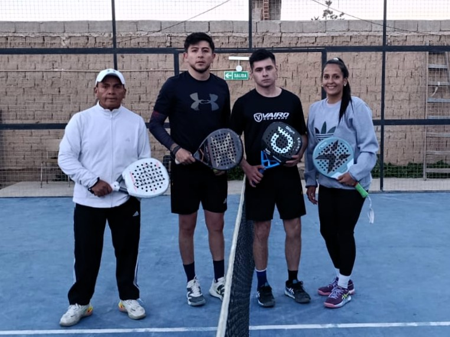
🎾 Los Infernales vs Los Rompe Redes
Resultado: 1-6 / 4-6
Los Rompe Redes comenzaron muy firmes y se llevaron el primer set con autoridad. En el segundo parcial, Los Infernales lograron entrar en ritmo y protagonizaron un encuentro mucho más parejo, con varios puntos largos y muy buenas jugadas. Un partido atractivo para cerrar la quinta fecha.
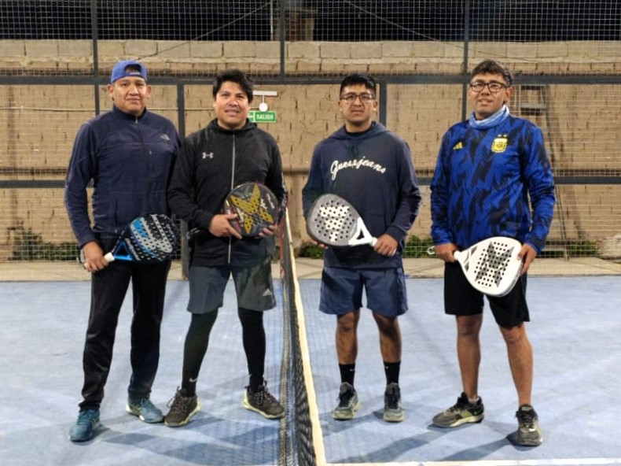
🎙️ Hoy: Desafío Día del Periodista
Antes de la actividad oficial del torneo, el predio de Pipo Pádel recibirá un encuentro amistoso muy especial.
📻 Radio Nacional 🆚 📺 Canal 6 La Quiaca
🕒 15:30 a 17:00 hs
El desafío se realiza en conmemoración al Día del Periodista "Mariano Moreno". Participarán jugadores novatos con el único objetivo de compartir una tarde divertida, deportiva y de camaradería. Además, surge la idea de que próximamente puedan organizarse nuevos desafíos con otras instituciones de la ciudad.
🔥 Esta tarde comienza la Fecha 6
Luego del amistoso, la acción continuará con tres encuentros correspondientes al inicio de la sexta fecha:
🎾 Hay Equipo 🆚 Viento Cruzado | 17:00 hs
🎾 Los Colocadores 🆚 Pala Sedienta | 19:00 hs
🎾 Los Pipos 🆚 Los Rompe Redes | 20:00 hs
🎾 Los Infernales 🆚 Los Pavitas | 21:00 hs
La Liga ya superó la mitad de su recorrido y cada punto comienza a tener un peso enorme pensando en la clasificación a los Playoffs. La tabla está más apretada que nunca y todavía quedan muchas historias por escribirse.
☕🧉 Invitamos a toda la comunidad, familias, amigos y amantes del pádel a acercarse al predio para compartir una linda tarde y disfrutar del mejor pádel amateur de La Quiaca.
📰 2-6-26 ÚLTIMAS NOVEDADES DEL TORNEO
La Liga Apertura Pipo Pádel 2026 ya superó la mitad de su recorrido y la tabla está más apretada que nunca.
🔥 Se terminó el invicto de Los Pipos
El sábado por la tarde se disputó uno de los partidos más esperados del campeonato.
Viento Cruzado golpeó primero llevándose el set inicial, pero Los Pipos reaccionaron de gran manera y empataron el encuentro en el segundo set.
El tercer parcial fue muy parejo y tuvo momentos de gran intensidad. Los Pipos llegaron a quebrar el saque de su rival y parecían encaminarse a la remontada, pero Viento Cruzado recuperó rápidamente el control del partido y terminó cerrando una enorme victoria.
🏆 Con este resultado, Los Pipos pierden su invicto, mientras que Viento Cruzado continúa sin conocer la derrota y se mantiene entre los grandes protagonistas del torneo.
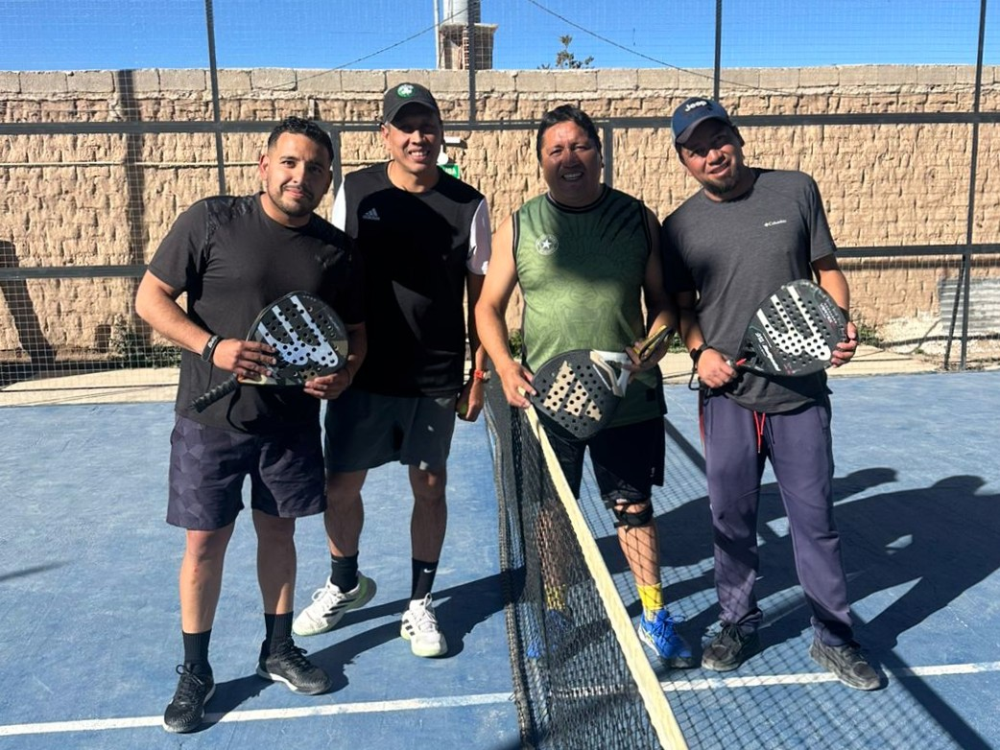
🌙 Jornada del Lunes
El lunes se disputaron tres encuentros que siguen moviendo la tabla de posiciones.
🎾 Apunados 🆚 Los Pavitas
Resultado: 0-6 / 0-6
Los Pavitas mostraron una versión muy sólida de su juego y lograron imponerse con autoridad.
Apunados, por su parte, ingresó algo frío al encuentro y no consiguió encontrar ritmo durante el desarrollo del partido.
A pesar del resultado, la dupla continúa sumando experiencia en su primera participación dentro de la Liga Apertura 2026.
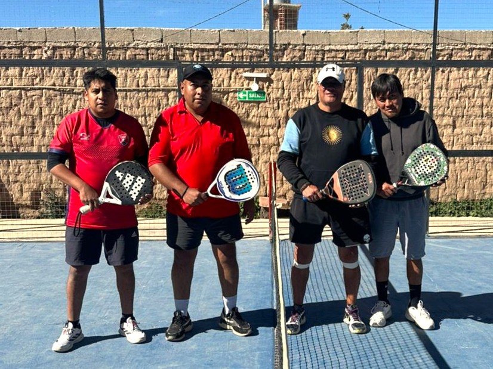
🎾 Los Doble E 🆚 Viento Cruzado
Resultado: 2-6 / 0-6
Viento Cruzado volvió a mostrar un gran nivel de juego. Por momentos pareció que Los Doble E encontraban ritmo dentro del partido, pero nuevamente les costó entrar en calor desde el inicio y terminaron cediendo ante una dupla que atraviesa uno de los mejores momentos del campeonato.
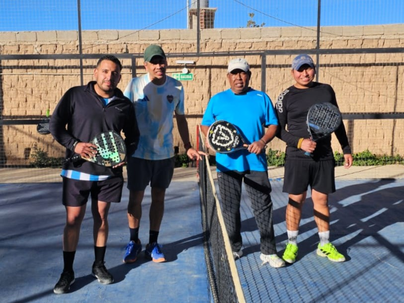
🎾 Los Colocadores 🆚 Los Pipos
Resultado: 2-6 / 4-6
Los Pipos consiguieron recuperarse rápidamente de la derrota sufrida el sábado y sumaron una nueva victoria. Sin embargo, Los Colocadores estuvieron muy cerca de forzar un tercer set gracias a varios puntos espectaculares que hicieron trabajar más de la cuenta a sus rivales.
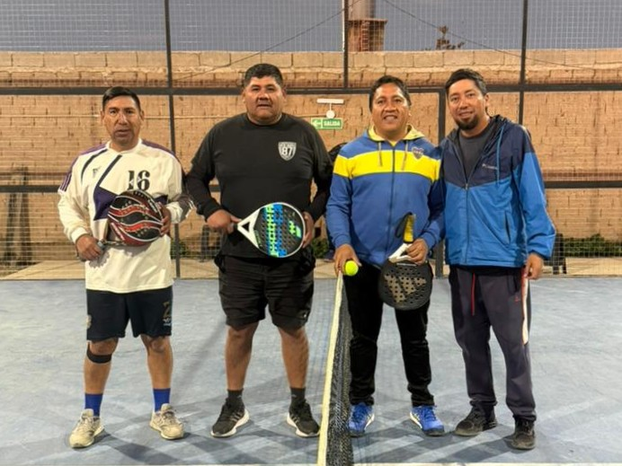
📅 Partidos de Hoy
Se viene una tarde cargada de pádel en Pipo Pádel:
🎾 Doble Falta 🆚 Viento Cruzado | 16:00h
🎾 Los Doble E 🆚 Apunados | 17:15h
🎾 Doble Falta 🆚 Hay Equipo | 19:00h
Invitamos a toda la comunidad a acercarse al predio para acompañar a las parejas y disfrutar de otra jornada de competencia.
🎙️ Desafío Especial por el Día del Periodista
Antes de la jornada oficial del miércoles, a las 15:30 hs, se disputará un encuentro amistoso especial:
🎤 Radio Nacional 🆚 📺 Canal 6 La Quiaca
El desafío forma parte de las actividades organizadas en el marco de la Semana del Periodista y promete una tarde diferente dentro de Pipo Pádel.
📌 Lo que viene
El último encuentro pendiente de la Fecha 5 será:
🎾 Los Colocadores 🆚 Pala Sedienta | 3 de junio - 19:00h
Y apenas finalice ese encuentro comenzará oficialmente la Fecha 6:
🔥 Pala Sedienta 🆚 Viento Cruzado | 3 de junio - 20:00h
🏆 ¡Ya superamos la mitad del campeonato!
Cada punto empieza a valer muchísimo y la lucha por los Playoffs está más abierta que nunca.
📰 29-5-26 INFORME OFICIAL DEL TORNEO
Liga Apertura Pipo Pádel 2026
🔥 La Liga sigue dejando partidazos
Entre miércoles y jueves se disputaron encuentros muy intensos,
con varios partidos definidos en tercer set y una tabla de posiciones
que empieza a marcar diferencias importantes.
📅 Resultados del Miércoles 27 de Mayo
Partido
Resultado
🎾 Los Doble E 🆚 Doble Falta
4-6 / 6-3 / 6-4
🎾 Punto de Oro 🆚 Hay Equipo
6-1 / 7-5
🎾 Los Pavitas 🆚 Viento Cruzado
2-6 / 0-6
🔥 El primer encuentro de la tarde dejó un verdadero partidazo.
Los Doble E lograron dar vuelta un partido muy complicado
frente a Doble Falta, que sigue mostrando una gran evolución
y cada vez juega con menos nervios dentro de la cancha.
Más tarde, Punto de Oro consiguió una importante victoria ante
Hay Equipo. A pesar del resultado, Hay Equipo continúa soltándose
y dejando atrás la presión típica de disputar su primer gran torneo.
En el cierre de la jornada, Viento Cruzado dominó el encuentro
frente a Los Pavitas. Los Pavitas entraron fríos al partido y el
encuentro tuvo momentos de tensión dentro de la cancha, algo que terminó influyendo
directamente en el resultado final.
📅 Resultados del Jueves 28 de Mayo
Partido
Resultado
🎾 Hay Equipo 🆚 Los Pipos
2-6 / 0-6
🎾 Los Infernales 🆚 Viento Cruzado
0-6 / 0-6
🏆 Los Pipos continúan liderando la tabla de posiciones.
El partido comenzó muy parejo hasta el 2-2, pero luego Los Pipos lograron imponer
su ritmo y cerrar el encuentro con autoridad.
En el último partido de la noche,
Viento Cruzado consiguió otra victoria importante.
A pesar del marcador, Los Infernales siguen mostrando crecimiento,
más confianza y menos nervios dentro de la cancha.
👀 El encuentro tuvo como veedor a Santiago Cadena,
joven jugador que próximamente estará participando en el futuro
Torneo Juvenil de Pádel de Pipo Pádel 🎾
📸 Fotos de la Jornada
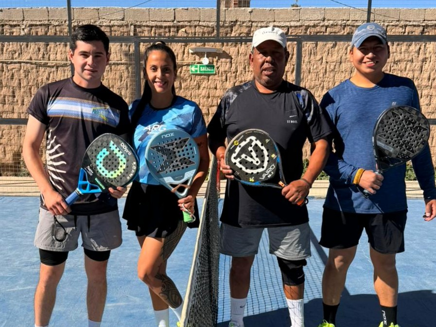
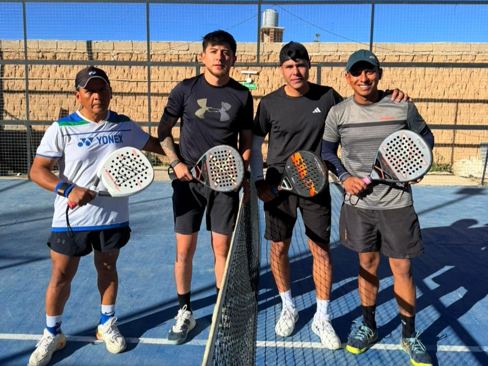
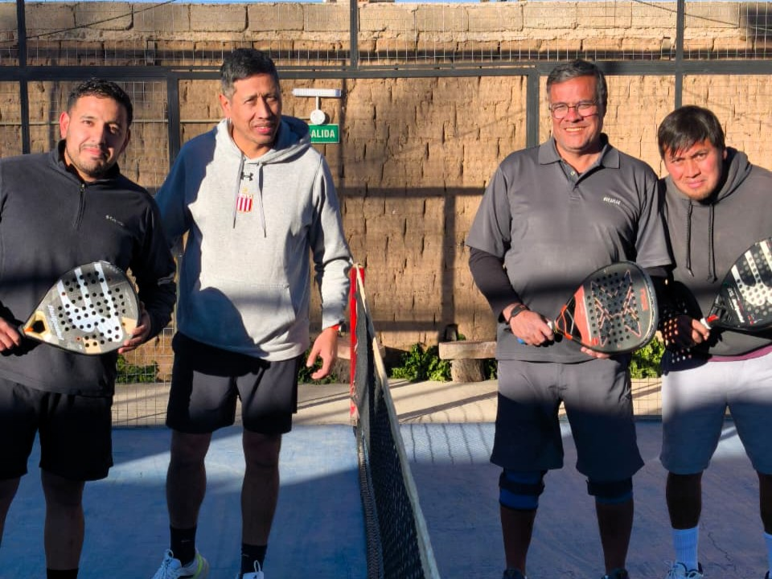
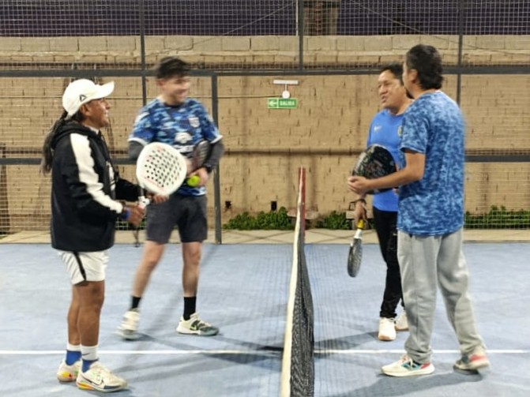
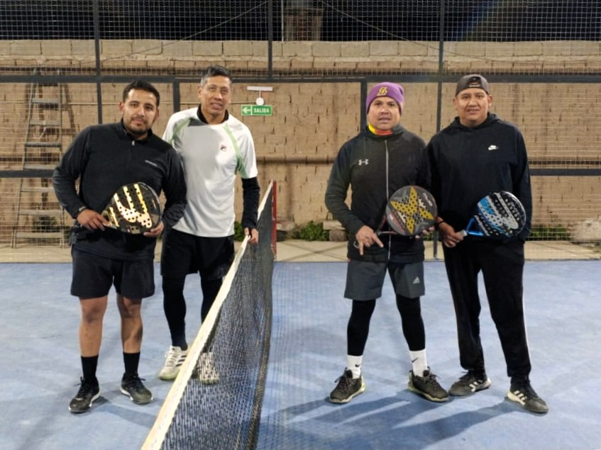
📅 Próximos Partidos
Partido
Fecha y Hora
🎾 Los Pipos 🆚 Viento Cruzado
30 de mayo - 16:00h
🎾 Los Doble E 🆚 Viento Cruzado
1 de junio - 17:00h
🎾 Los Doble E 🆚 Apunados
2 de junio - Inicio Fecha 5
📊 Ya se encuentran actualizados el fixture, la tabla de posiciones
y todos los resultados oficiales del torneo.
🧉 Invitamos a toda la comunidad a seguir acompañando esta hermosa liga,
que continúa creciendo fecha tras fecha con muchísimo público,
grandes partidos y un ambiente espectacular.
📰 27-5-26 INFORME OFICIAL DEL TORNEO
Liga Apertura Pipo Pádel 2026
🔥 Continúa la acción en Pipo Pádel
La Liga Apertura sigue sumando grandes partidos y cada fecha deja encuentros más parejos,
mejores puntos y muchísimo público acompañando.
Ya se disputaron los siguientes encuentros:
🎾 Los Infernales 🆚 Pala Sedienta
Resultado: 5-7 / 6-7 (3-7)
👀 Veedor: Pedro Serapio
🎾 Los Colocadores 🆚 Los Pavitas
Resultado: 4-6 / 2-6
👀 Veedor: Darío Urzagasti
🇦🇷 En una verdadera jornada patria,
Pala Sedienta consiguió una gran victoria ante
Los Infernales en un partido muy peleado y con momentos de gran nivel.
A pesar de la derrota, Los Infernales mostraron nuevamente una importante evolución en su juego
y dejaron sensaciones muy positivas de cara a las próximas fechas.
Más tarde, Viento Cruzado logró imponerse ante
Los Colocadores, que comenzaron algo fríos pero igualmente dejaron varios puntos
de gran calidad y demostraron nuevamente su estilo característico.
En el cierre de la jornada, Los Pavitas volvieron a mostrar un crecimiento muy sólido
como equipo. Aprovecharon el desgaste físico de Los Colocadores, quienes afrontaron dos partidos
el mismo día, y consiguieron una importante victoria para seguir escalando posiciones.
📸 Galería de la Jornada
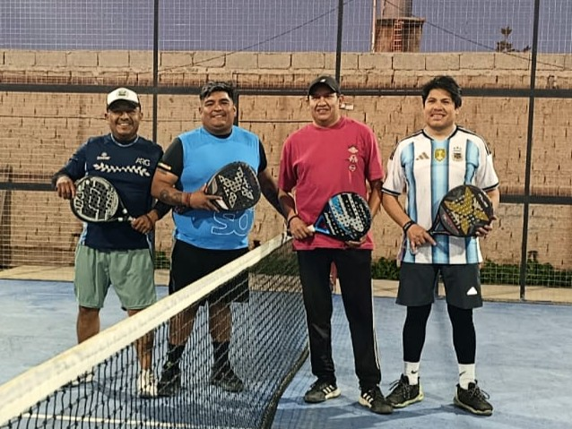
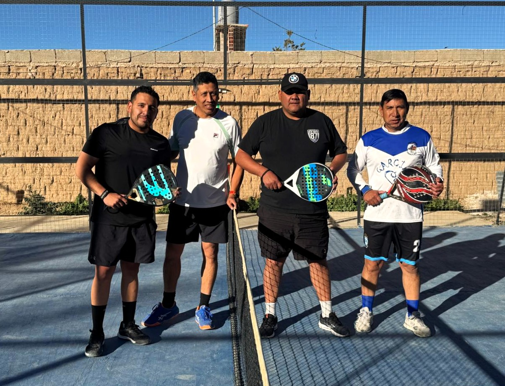
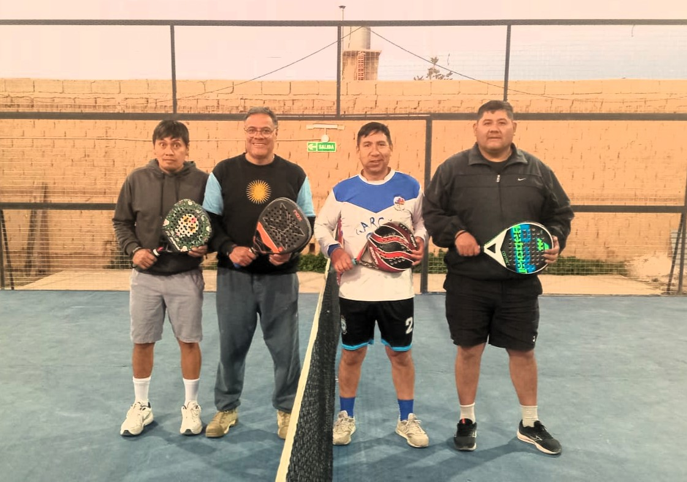
📅 Partidos de HOY
Hoy se vive una jornada espectacular en Pipo Pádel,
cerrando oficialmente la 3° fecha y comenzando la 4° fecha.
Partido
Horario
🎾 Los Doble E 🆚 Doble Falta
15:00h
🎾 Punto de Oro 🆚 Hay Equipo
16:30h
🎾 Los Pavitas 🆚 Viento Cruzado
18:00h
🔥 La tabla de posiciones comienza a moverse fuerte y cada partido vale muchísimo.
Ya se completó aproximadamente una tercera parte del torneo,
por lo que cada punto empieza a pesar cada vez más.
🧉 Invitamos a toda la comunidad a acercarse al predio,
compartir una linda tarde de pádel, mates, amigos y muchísimo deporte.
📰 24-5-26 Novedades del Torneo
Toda la información oficial del Torneo Apertura 2026
FECHA 3
🎾 Los Pavitas siguen creciendo y Los Pipos remontaron un partidazo ante Pala Sedienta
Actualización oficial · Liga Pipo Pádel Apertura 2026
🌪️ Hay Equipo vs Los Pavitas
La jornada comenzó el viernes por la tarde con victoria de
Los Pavitas
frente a
Hay Equipo
por
6-4 / 6-4.
El encuentro se disputó en una tarde marcada por el viento,
agregando dificultad a varios puntos largos y obligando a ambos equipos a adaptarse constantemente.
Por el lado de Hay Equipo todavía se notaron algunos nervios dentro de la cancha,
mientras que Los Pavitas continúan creciendo partido tras partido y mostrando cada vez más solidez como dupla.
El encuentro tuvo como veedor oficial a
Lucas Centurión.
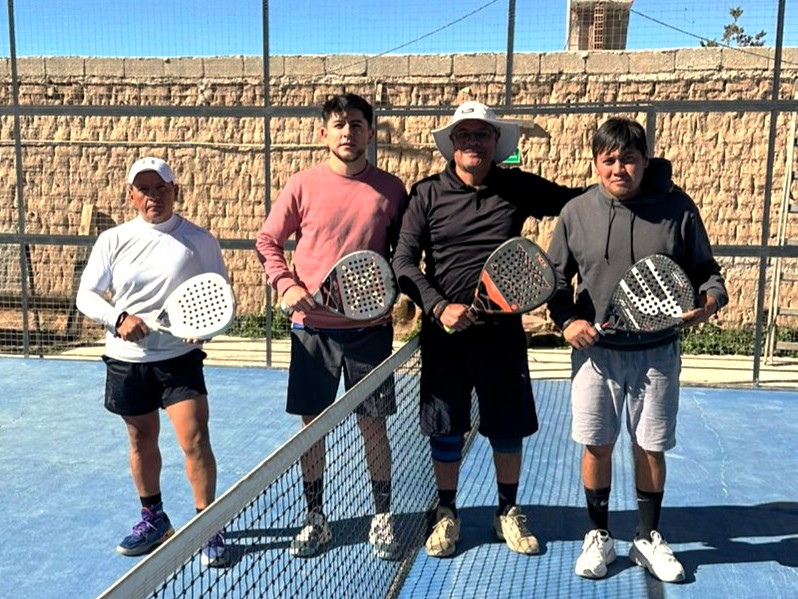
📸 Foto grupal del encuentro
🔥 Los Pipos vs Pala Sedienta
Ya en la noche del sábado,
Los Pipos
derrotaron a
Pala Sedienta
por
6-1 / 6-4.
Aunque el primer set fue ampliamente favorable para Los Pipos,
el segundo cambió completamente de ritmo.
Pala Sedienta logró arrinconar a los líderes del torneo
y llegó a colocarse
4-1 arriba,
generando uno de los momentos más tensos de la fecha.
Sin embargo,
Los Pipos reaccionaron a tiempo,
recuperaron confianza y terminaron remontando el set hasta cerrarlo 6-4.
El partido tuvo un gran acompañamiento de público y dejó varios puntos espectaculares.
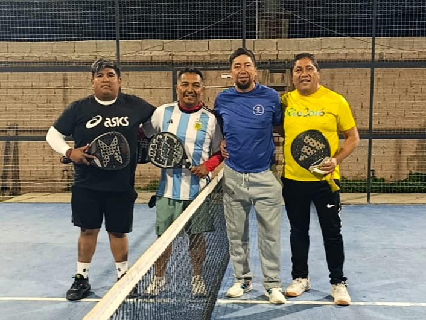
📸 Foto grupal del encuentro
⚡ Los Pavitas vs Los Doble E
El último encuentro de la noche terminó con victoria de
Los Pavitas
frente a
Los Doble E
por
6-4 / 6-2.
Fue un partido intenso,
con puntos largos y mucha exigencia física para ambos equipos.
Los Pavitas continúan afianzándose cada vez mejor como equipo,
mostrando una evolución muy marcada respecto a las primeras fechas del torneo.
El encuentro dejó grandes intercambios y confirmó que la pelea por los Playoffs será cada vez más ajustada.
Ambos partidos nocturnos tuvieron como veedor oficial a
Enzo Cadena.
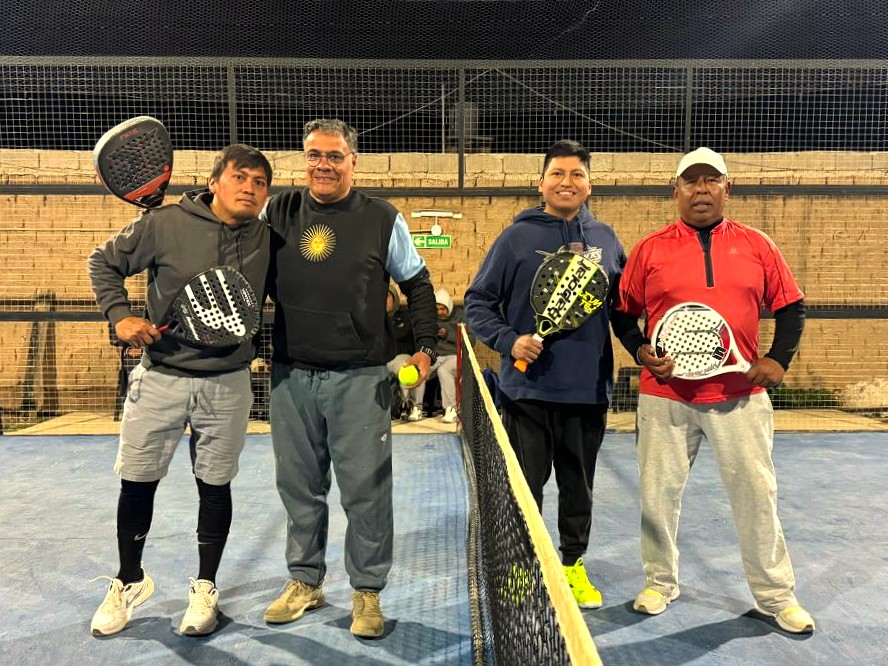
📸 Foto grupal del encuentro
📅 Próximos partidos
La Fecha 3 continúa la próxima semana y ya tenemos nuevos cruces confirmados:
🕒 27 de mayo · 15:00h
Los Doble E 🆚 Doble Falta
🕖 27 de mayo · 19:00h
Los Pavitas 🆚 Viento Cruzado
🗓️ 28 de mayo
Viento Cruzado 🆚 Los Colocadores
El torneo ya comienza a acercarse al cierre de la tercera fecha
y la tabla de posiciones sigue cambiando constantemente 🔥
🧉 Pipo Pádel sigue creciendo
Invitamos a toda la comunidad a seguir acompañando los encuentros,
compartir una tarde o noche diferente y disfrutar del ambiente que se vive en cada jornada.
Amigos, familias, mates, música y mucho pádel hacen que cada fecha tenga algo especial 🎾🔥
📰 22-5-26 Novedades del Torneo
Toda la información oficial del Torneo Apertura 2026
FECHA 2
🎾 Pala Sedienta debutó con un triunfazo inolvidable ante Hay Equipo
Actualización oficial · Liga Pipo Pádel Apertura 2026
🔥 Hay Equipo vs Pala Sedienta
La tarde de ayer dejó uno de los partidos más emocionantes del torneo hasta el momento.
En un verdadero partidazo,
Pala Sedienta
derrotó a
Hay Equipo
por
6-2/5-7/7-6(7-4),
en un encuentro cargado de emociones y grandes puntos.
Luego de comenzar perdiendo el primer set,
Pala Sedienta logró reaccionar y cambiar completamente la dinámica del partido,
mostrando mucha actitud y personalidad en su debut oficial dentro de la liga.
El segundo set fue extremadamente parejo,
mientras que el tercero terminó definiéndose en un vibrante tie break,
generando uno de los cierres más intensos que tuvo el torneo hasta ahora.
El público acompañó durante todo el encuentro,
disfrutando de un partido que seguramente quedará entre los más recordados de esta etapa inicial.
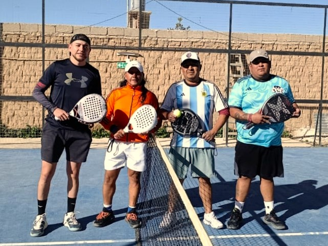
📸 Foto grupal del encuentro
📅 Hoy finaliza la Fecha 2
Esta tarde se disputará el último encuentro correspondiente a la segunda fecha del torneo:
🕒 15:00h ·
Hay Equipo 🆚 Los Pavitas
Ambos equipos buscarán cerrar la fecha sumando puntos importantes
antes del inicio de una nueva jornada de competencia.
🚀 Mañana comienza la Fecha 3
La liga no se detiene y mañana dará inicio oficialmente la
Fecha 3 del Torneo Apertura 2026.
🕘 21:00h ·
Los Pavitas 🆚 Los Doble E
Será además el cuarto partido consecutivo para Los Pavitas,
una de las parejas con mayor actividad en lo que va del campeonato.
🧉 Seguimos viviendo el pádel
Invitamos a toda la comunidad a seguir acompañando cada jornada,
compartir mates, charlas y disfrutar del ambiente que se vive en Pipo Pádel.
La tabla de posiciones continúa cambiando fecha tras fecha
y cada partido empieza a sentirse cada vez más importante 🎾🔥
📰 21-5-26 Novedades del Torneo
Toda la información oficial del Torneo Apertura 2026
FECHA 2
🎾 Una jornada cargada de emociones, remontadas y el primer tercer set del torneo
Actualización oficial · Liga Pipo Pádel Apertura 2026
🏆 Los Pavitas vs Los Pipos
En el primer encuentro de la jornada,
Los Pipos
consiguieron su tercera victoria consecutiva tras derrotar a
Los Pavitas
por
6-3 / 6-4.
A diferencia de fechas anteriores, el partido fue mucho más parejo y disputado,
obligando a Los Pipos a trabajar cada punto para mantener la ventaja.
El encuentro dejó varios rallies intensos y mostró un gran crecimiento competitivo en ambos equipos.
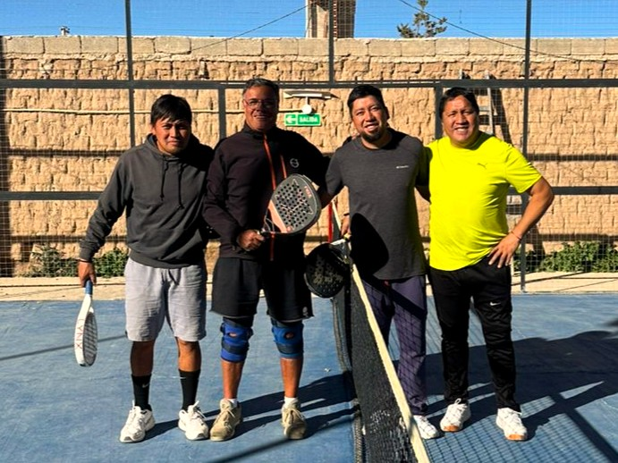
📸 Foto grupal del encuentro
🔥 Los Infernales vs Apunados
Más tarde,
Los Infernales
lograron una gran recuperación respecto a su debut y vencieron a
Apunados
por
6-1 / 6-1.
El equipo mostró mucha más soltura y confianza dentro de la cancha,
dejando atrás los nervios de la primera fecha.
Por el lado de Apunados, el debut oficial estuvo marcado por la ansiedad lógica de comenzar un torneo,
aunque dejaron buenas sensaciones y demostraron que tienen potencial para crecer en las próximas jornadas.
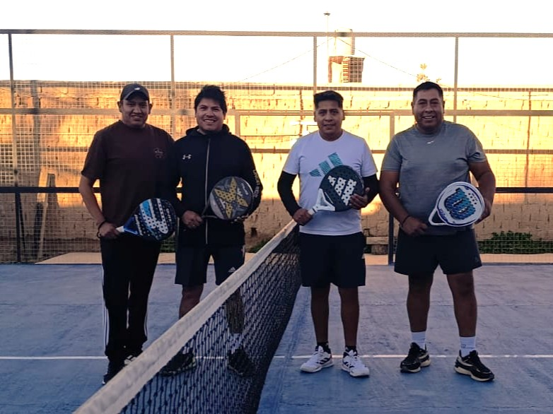
📸 Foto grupal del encuentro
⚡ Los Rompe Redes vs Los Doble E
El último partido de la noche regaló hasta ahora uno de los encuentros más emocionantes del torneo.
Los Doble E
derrotaron a
Los Rompe Redes
por
0-6 / 6-4 / 6-0,
en el primer partido que necesitó un tercer set para definirse.
El desarrollo del encuentro fue totalmente inesperado:
en el primer set Los Doble E no lograron ganar ni un solo game,
pero en el segundo reaccionaron de gran manera y lograron igualar el partido.
Ya en el tercer set ocurrió exactamente lo contrario al inicio:
esta vez fueron ellos quienes no dejaron sumar ningún game a Los Rompe Redes,
cerrando una remontada espectacular.
A pesar del frío de la noche,
el predio estuvo colmado de gente acompañando el partido,
convirtiéndose en uno de los mejores ambientes que tuvo hasta ahora la liga.
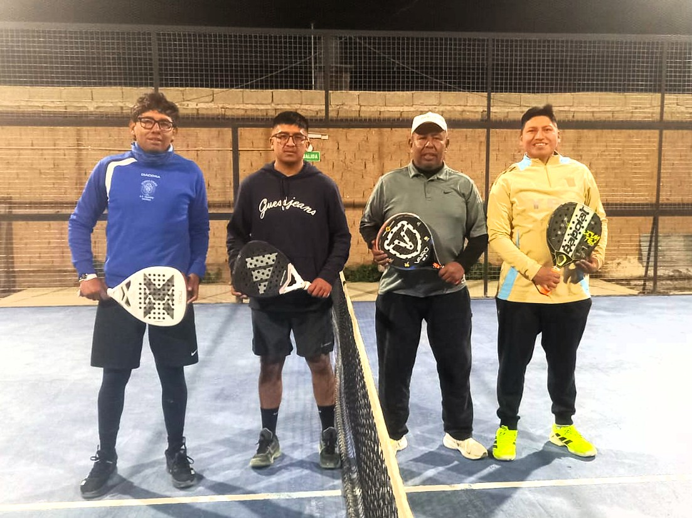
📸 Foto grupal del encuentro
📅 Hoy continúa la Fecha 2
Esta tarde continúa la actividad oficial del torneo con un encuentro muy esperado:
🗓️ Partido programado
🕓 16:00h ·
Hay Equipo 🆚 Pala Sedienta
Será además el debut oficial de
Pala Sedienta,
otra de las parejas que genera expectativa dentro de la liga.
Mientras tanto, la tabla de posiciones empieza a moverse cada vez más,
con equipos peleando punto a punto por los puestos de clasificación.
Y casi sin darnos cuenta…
ya estamos muy cerca de comenzar la
Fecha 3 🔥🎾
🧉 Una liga para compartir
Invitamos a toda la comunidad a seguir acompañando los encuentros,
disfrutar del ambiente del predio y vivir tardes y noches llenas de pádel,
mates, música y buena compañía.
Toda la información oficial, resultados, fixture y tabla de posiciones
se actualiza constantemente en la página oficial del torneo 🎾🔥
📰 19-5-26 Novedades del Torneo
Toda la información oficial del Torneo Apertura 2026
FECHA 2
🎾 Punto de Oro y Los Pipos sumaron nuevas victorias en otra gran jornada de pádel
Actualización oficial · Liga Pipo Pádel Apertura 2026
🏆 Punto de Oro vs Doble Falta
El martes se disputó una nueva jornada correspondiente a la
Fecha 2 del Torneo Apertura 2026.
En el primer encuentro,
Punto de Oro
logró quedarse con la victoria frente a
Doble Falta
por
6-1 / 6-4.
Doble Falta a diferencia de su primera presentación,
el equipo mostró mucha más confianza dentro de la cancha,
dejando atrás gran parte de los nervios iniciales y demostrando que tienen muchísimo potencial para seguir creciendo durante la competencia.
El partido se desarrolló con total normalidad y en un muy buen ambiente deportivo.
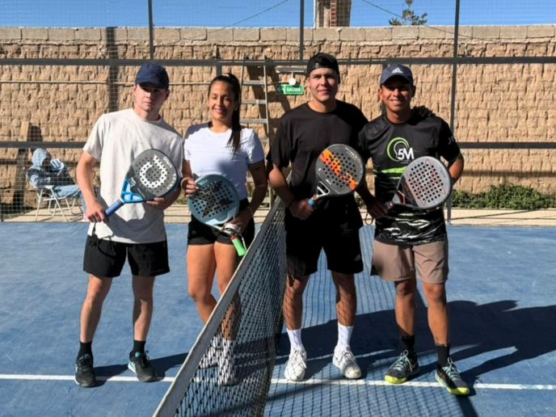
📸 Foto grupal del encuentro
🔥 Los Pipos vs Los Doble E
En el segundo partido de la jornada,
Los Pipos
derrotaron a
Los Doble E
también por
6-1 / 6-4.
El encuentro tuvo buenos intercambios y dejó varios puntos interesantes,
manteniendo el clima competitivo y amistoso que viene caracterizando a la liga.
Fue el debut oficial de Doble E en la liga,
una pareja recientemente conformada que prácticamente no había tenido tiempo de entrenar juntos antes del torneo.
La fecha volvió a disputarse sin inconvenientes,
con presencia de amigos, familiares y jugadores acompañando desde afuera de la cancha.
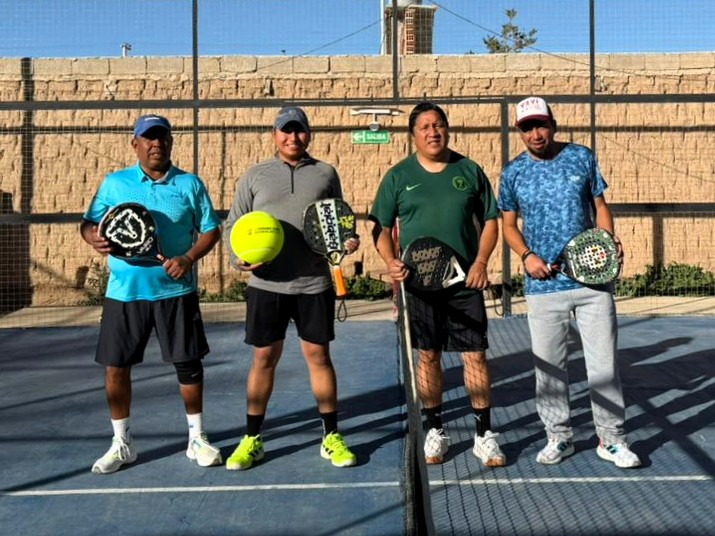
📸 Foto grupal del encuentro
📅 Próxima jornada · Miércoles 21 de Mayo
La actividad continúa y mañana se viene una tarde cargada de pádel en Pipo Pádel,
cada vez más cerca de completar la segunda fecha del torneo.
Además, será el esperado debut oficial de la dupla
“Apunados” 🎾🔥
🗓️ Partidos programados
🕟 16:30h ·
Los Pavitas 🆚 Los Pipos
🕕 18:00h ·
Los Infernales 🆚 Apunados
🕗 20:00h ·
Los Rompe Redes 🆚 Los Doble E
🧉 Una tarde para compartir
Invitamos a toda la comunidad a acercarse a disfrutar una nueva jornada de pádel,
acompañar a las duplas y compartir una linda tarde entre amigos, familias y mucho deporte.
Música, mates, buena onda y partidos cada vez más intensos comienzan a darle vida al Torneo Apertura 2026 🎾🔥
📰 17-5-26 Novedades del Torneo
Toda la información oficial del Torneo Apertura 2026
FECHA 2
🎾 Los Colocadores debutaron con victoria y se suma una nueva dupla al torneo
Actualización oficial · Liga Pipo Pádel Apertura 2026
🏆 Resultado del partido
En la mañana del sábado se disputó el primer encuentro correspondiente a la
Fecha 2 del Torneo Apertura 2026.
Los Colocadores lograron imponerse frente a
Los Rompe Redes por
7-5 / 6-4,
en un partido nuevamente muy parejo y entretenido para todos los presentes.
El encuentro tuvo varios puntos de gran nivel y momentos de mucha tensión.
Por momentos parecía que el partido se encaminaba a un tercer set,
algo que todavía no ocurrió en lo que va del torneo… aunque cada vez estamos más cerca 😉
Los Colocadores hicieron honor a su nombre dejando varios puntos colocados con muchísima precisión,
sorprendiendo tanto a rivales como al público presente.
La jornada se desarrolló en una mañana soleada y agradable,
ideal para disfrutar del pádel y compartir un lindo momento en el predio.
El partido contó con la presencia de
Brian Galiano como veedor oficial.
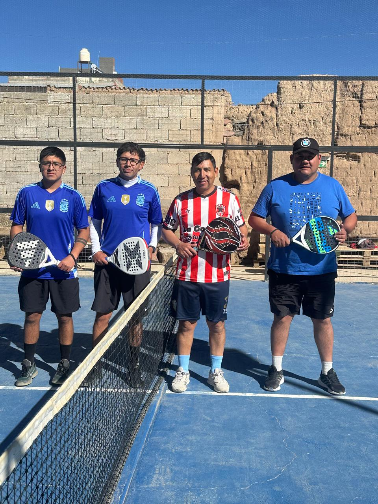
📸 Foto grupal del encuentro
📊 Tabla de posiciones
Finalizado este encuentro,
“Hay Equipo”
se mantiene momentáneamente en lo más alto de la tabla general.
La pelea por los puestos de Playoffs recién comienza
y cada partido empieza a valer muchísimo.
🔥 Nueva dupla confirmada
La Liga sigue creciendo y oficialmente ya contamos con la
dupla número 12 del torneo.
👥 “Apunados” se suma al Torneo Apertura 2026
y debutará enfrentando a
Los Infernales,
quienes habían quedado libres en esta fecha.
Con esta incorporación, el torneo suma aún más movimiento,
nuevos cruces y más competencia para las próximas semanas.
📅 Próximamente
En las próximas horas se confirmarán los días y horarios
de los partidos restantes de la Fecha 2.
Invitamos a toda la comunidad a seguir acompañando este hermoso torneo,
compartir las jornadas y vivir el pádel como un espacio de encuentro,
deporte y buena compañía 🎾🔥
🎾 14-5-26 CIERRE OFICIAL DE LA FECHA 1
🌙 Viento Cruzado cerró la primera fecha con una gran victoria
Se disputó el último encuentro correspondiente a la Fecha 1
del Torneo Apertura 2026 en una noche que arrancó con clima ideal
para el pádel y terminó dejando un ambiente fresco,
acompañado por familiares, amigos y mucho público en el predio. 🎾🔥
🆚 Viento Cruzado vs Los Rompe Redes
✅ 6-4 / 7-5
El partido comenzó justo cuando se encendían las luces de la cancha,
generando un ambiente espectacular para cerrar la primera jornada oficial
del torneo. 💡🎾
Aunque Viento Cruzado logró quedarse con el triunfo,
Los Rompe Redes fueron creciendo muchísimo con el correr del partido.
En el segundo set llegaron incluso a ponerse
4-1 arriba,
mostrando una gran reacción y poniendo en aprietos a sus rivales.
Sin embargo, tras llegar al
5-5,
Viento Cruzado logró mantener la calma en los puntos decisivos
y terminó cerrando el encuentro por
7-5.
Fue un partido muy peleado y dinámico,
donde por momentos parecía que Los Rompe Redes podían llevarse el set. 🔥
El encuentro se disputó sin inconvenientes y contó con la supervisión
de Gustavo Alderete como veedor oficial.
Además, durante la jornada también tuvimos la visita especial de
“Milo”,
mascota de un amigo padelero.
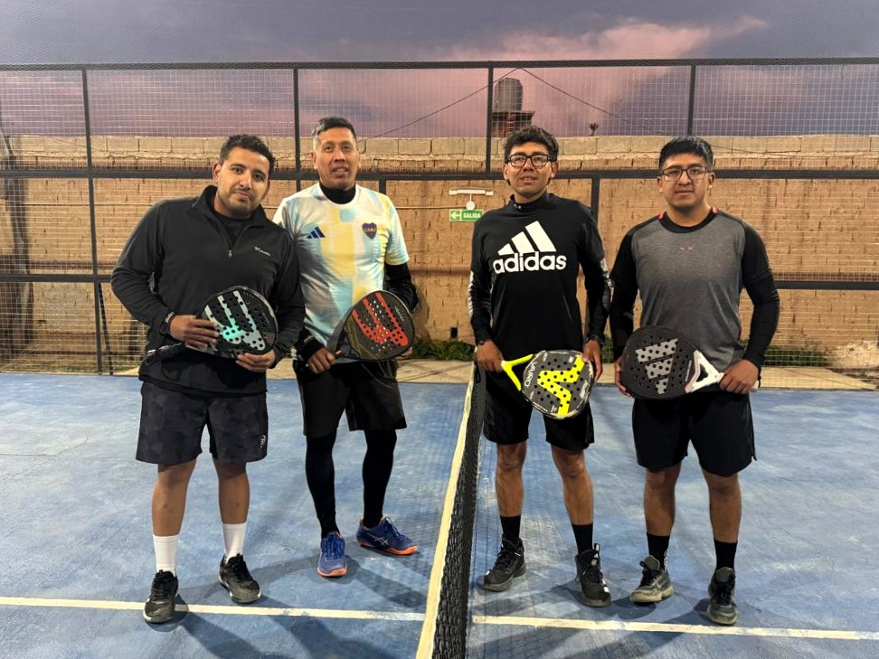
📸 Foto grupal del encuentro
🚀 Comienza la Fecha 2
La segunda fecha del Torneo Apertura 2026 comenzará este
sábado 16
con un nuevo gran cruce por la mañana. 🎾
🔥 Los Rompe Redes 🆚 Los Colocadores
📅 Sábado 16 · 🕚 11:00 hs
Muy pronto estarán publicándose las fechas y horarios
de los demás partidos correspondientes a la Fecha 2.
🌐 SeguÍ toda la información oficial
Resultados, tabla de posiciones, fixture, fotos y novedades
ya se encuentran disponibles en el portal oficial del torneo.
🎾 RESUMEN OFICIAL DE JORNADA
🧉 Pádel, mates y grandes partidos en Pipo Pádel
Se vivió una hermosa tarde de pádel en el predio de Pipo Pádel,
con buena compañía, público acompañando desde afuera de la cancha
y un ambiente cálido que volvió a demostrar que este torneo
también se trata de compartir y disfrutar. 🎾🔥
🏁 Punto de Oro se quedó con un partidazo
🆚 Los Pavitas vs Punto de Oro
4-6 / 6-7 (5-7)
El primer encuentro de la jornada terminó siendo uno de los partidos
más peleados hasta el momento en el torneo. 🔥
Aunque desde Punto de Oro imaginaban un partido rápido,
el desarrollo fue totalmente distinto:
el encuentro terminó extendiéndose durante
1 hora y 20 minutos,
dejando puntos largos, games muy ajustados y mucha intensidad.
En el segundo set, Los Pavitas lograron llevar el partido hasta el
Tie Break, donde terminaron cayendo
por un ajustado 5-7.
Además, fue una situación muy particular,
ya que ninguno de los equipos había competido previamente junto
a rival, haciendo todavía más sorpresivo
el rendimiento mostrado dentro de la cancha. 🎾
Durante algunos minutos apareció un pequeño remolino dentro de la cancha,
producto del viento de la tarde, aunque no pasó a mayores
y el partido pudo continuar normalmente. 🌪️
El encuentro contó con la supervisión de
Elvio Quispe y
Lucas Centurión
como veedores oficiales.
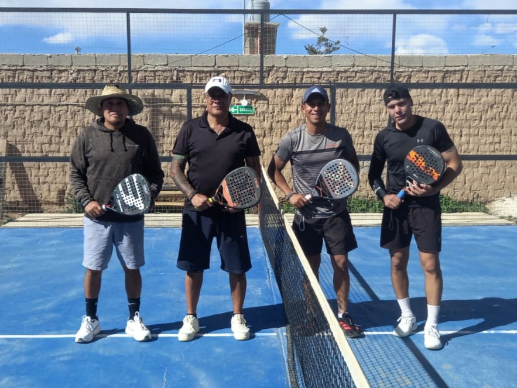
📸 Foto grupal del encuentro
⚡ Hay Equipo ganó con autoridad
🆚 Hay Equipo vs Los Infernales
6-0 / 6-0
En el segundo encuentro de la jornada,
Hay Equipo
consiguió una sólida victoria frente a
Los Infernales.
A pesar del resultado, desde afuera se pudo notar que los nervios
jugaron muy en contra del equipo derrotado.
Varias oportunidades claras terminaron escapándose por detalles mínimos,
producto de la tensión y la ansiedad del debut oficial.
El partido tuvo como veedor oficial a
Enzo Cadena.
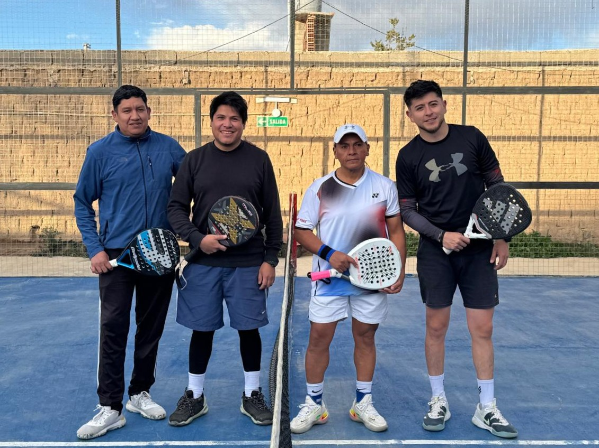
📸 Foto grupal del encuentro
🌙 Hoy se juega bajo las luces
Debido a la reprogramación del fixture,
el cierre oficial de la Fecha 1 será esta noche
a las 19:00 hs.
🔥 Viento Cruzado 🆚 Los Rompe Redes
📅 Hoy · 🕖 19:00 hs
Esta noche se vuelven a encender las luces de la cancha
para vivir otro gran encuentro del Torneo Apertura 2026. 💡🎾
Habrá música, mates, buena compañía y nuevamente
un ambiente pensado para disfrutar el pádel entre amigos,
familias y toda la comunidad que viene acompañando esta nueva etapa.
Aunque para hoy se espera nuevamente una máxima cercana a los
16°C,
todo indica que el ambiente cálido del predio volverá a hacerse sentir,
tal como ocurrió durante la jornada de ayer. 🧉🔥
👨👩👧👦 Invitación abierta
Invitamos a toda la comunidad, familias, amigos y amantes del deporte
a acercarse a Pipo Pádel para compartir otra noche de pádel,
encuentros y buenos momentos. 🎾❤️
📢 ACTUALIZACIÓN OFICIAL
🎾 Jornada de miércoles en Pipo Pádel
La organización informa que el encuentro programado para las
20:00 hs entre
Viento Cruzado y
Pala Sedienta
será reprogramado por motivos particulares.
⏳ Partido reprogramado
La nueva fecha y horario del encuentro serán informados próximamente
a través de los medios oficiales de la liga.
🔥 Partidos confirmados para hoy
Partido
Horario
🆚 Los Pavitas vs Punto de Oro
15:00 hs
🆚 Hay Equipo vs Los Infernales
18:00 hs
Para esta jornada se espera una temperatura máxima cercana a los
16°C, ideal para disfrutar una tarde de pádel,
mates y buena compañía en el predio. 🧉🎾
👨👩👧👦 Invitación abierta
Invitamos a toda la comunidad, familias y amigos a acercarse
a compartir la jornada, acompañar a los jugadores y disfrutar
del ambiente de la liga en Pipo Pádel. 🎶🔥
🐾 Predio Pet Friendly
El predio de Pipo Pádel también es
Pet Friendly,
en homenaje a “Pipo”, la mascota y parte de la familia
de los emprendedores que dieron vida a este proyecto. ❤️🐶
Seguimos construyendo un espacio donde el deporte,
la amistad y el compartir sean tan importantes
como cada partido dentro de la cancha. 🎾🔥
✅ RESULTADO OFICIAL
🎾 Los Pipos arrancaron con una gran victoria
Se disputó oficialmente el primer encuentro del
Torneo Apertura 2026 de Pipo Pádel,
en una tarde nublada pero ideal para jugar al pádel,
sin viento y con un gran ambiente dentro del predio. 🔥
🏁 Resultado Final
🔵 Los Pipos 2
6-1 / 6-2
⚫ Doble Falta 0
El encuentro se desarrolló con total normalidad y contó
con la presencia de público que se acercó a acompañar a los equipos,
compartir unos mates y disfrutar de una linda jornada deportiva
acompañada por música y un gran clima de torneo. 🎶🧉
La fiscalización y supervisión del partido estuvo a cargo de
Pedro Serapio, quien se desempeñó como veedor oficial
del encuentro.
📊 Tabla actualizada
Con este resultado,
Los Pipos quedan momentáneamente como
únicos punteros del campeonato tras disputarse el primer partido oficial
de la liga. 🏆
🔥 Mañana continúa la acción
Este miércoles nos espera una jornada cargada de pádel
con los siguientes cruces programados:
Partido
Horario
🆚 Los Pavitas vs Punto de Oro
15:00 hs
🆚 Hay Equipo vs Los Infernales
18:00 hs
🆚 Viento Cruzado vs Pala Sedienta
20:00 hs
Invitamos a toda la comunidad a seguir acompañando esta nueva etapa
del pádel en La Quiaca, disfrutando de los partidos,
compartiendo el ambiente de la liga y alentando a cada equipo
durante el torneo. 🎾🔥
📰 Portal Informativo
Todas las novedades del Torneo Apertura 2026 de Pipo Pádel
🔥 COMIENZA EL TORNEO
🎾 El Torneo Apertura 2026 ya tiene fecha de inicio
La pelota comienza a rodar oficialmente este
martes 12 de mayo a las 16:30 hs,
dando inicio a una nueva etapa para el pádel en
Pipo Pádel.
🏁 Primer Partido Oficial
Los Pipos
🆚
Doble Falta
Más que un torneo, esta liga busca generar un espacio
para compartir, competir sanamente y seguir haciendo crecer
el pádel en La Quiaca. 🎾🔥
🏆 PREMIOS OFICIALES
Con un total de 11 parejas inscriptas,
quedaron confirmados oficialmente los premios del
Torneo Apertura 2026.
🥇 Campeones
🏆 Copa
👕 2 remeras oficiales
💰 $180.000
🥈 Subcampeones
🏆 Copa
👕 2 remeras oficiales
💰 $110.000
🥉 Tercer Puesto
🏅 Medallas
👕 2 remeras oficiales
💰 $60.000
🏆 Copa de Plata
Las parejas que no ingresen a los Playoffs principales
también tendrán su competencia especial:
la Copa de Plata,
buscando que todos continúen jugando y disfrutando del torneo
hasta el final. 🎾
🎾 JORNADA DE PÁDEL
🧉 Miércoles de partidos y encuentro en Pipo Pádel
Este miércoles se viene una linda jornada de pádel en el predio.
Invitamos a todos los jugadores, amigos y familias a acercarse
a compartir la tarde, mirar buenos partidos, tomar unos mates
y seguir viviendo el ambiente de la liga. 🔥
Porque este torneo también busca eso:
crear comunidad, amistad y buenos momentos dentro y fuera de la cancha.
Partido
Horario
🆚 Los Pavitas vs Punto de Oro
13 de mayo · 15:00h
🆚 Hay Equipo vs Los Infernales
13 de mayo · 18:00h
🆚 Viento Cruzado vs Pala Sedienta
13 de mayo · 20:00h
🎬 Cierre de la Primera Fecha
La primera fecha del Torneo Apertura 2026 se cerrará el viernes
con un gran cruce nocturno:
🔥 Los Rompe Redes 🆚 Los Colocadores
📅 15 de mayo · 🕖 19:00h
Se viene una semana cargada de partidos, emoción
y mucho pádel en Pipo Pádel. 🎾🔥
🏆 Duplas Confirmadas
Equipos oficialmente inscriptos en el Torneo Apertura 2026
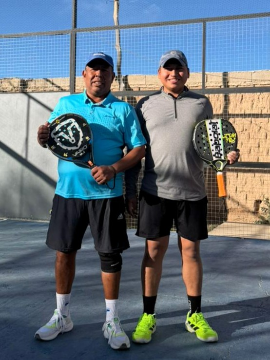
🔥 Los doble E
👤 Emilio Siquila
👤 Elbio Quispe
🌪️ Viento Cruzado
👤 Enzo Cadena
👤 Diego Herrera
⚡ Hay Equipo
👤 Gustavo Alderete
👤 Pedro Serapio
🕸️ Los Rompe Redes
👤 Cristian Tolaba
👤 Walter M. Bautista
Los Pavitas
👤 Iván Martinez
👤 Emilio Cabrera
🎾 Los Pipos
👤 Darío Urzagasti
👤 Marcelo Urzagasti
🚫 Doble Falta
👤 Débora Bustamante
👤 Lucas Centurión
🥇 Punto de Oro
👤 Walter Cristaldo
👤 Brian Galiano
🎯 Los Colocadores
👤 José María Navarro
👤 Raúl Gutierrez
🔥 Los Infernales
👤 Enzo Maigua
👤 Ricardo Mamaní
🍻 Pala Sedienta
👤 Ignacio Moscoso
👤 Pablo Moscoso
🍻 Apunados
👤 Miguel Bitancor
👤 Marcelo Cruz
📅 Fixture del Torneo
Ya nos encontramos jugando las ultimas fechas del torneo